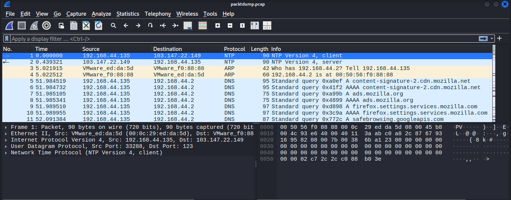
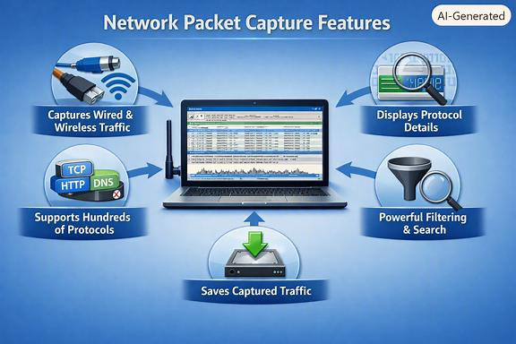
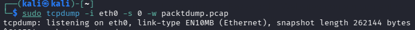

Network Sniffing
التنصت على الشبكة
Eng. Zahra Rajeh, M.Sc. · 34 slides, fully translated, nothing omitted.
م. زهراء راجح · ٣٤ شريحة مترجمة بالكامل دون حذف أي شيء.
NETWORK SNIFFING
Ethical Hacking and Penetration
Eng. Zahra Rajeh, M.Sc.
Sniffing is the process of capturing and analyzing network traffic to understand how devices communicate and to detect security issues.
ESSENTIALS (section title, slide 3)
التنصت على الشبكة
الاختراق الأخلاقي واختبار الاختراق
م. زهراء راجح، ماجستير
التنصت (Sniffing) هو عملية التقاط وتحليل حركة مرور الشبكة لفهم كيفية تواصل الأجهزة واكتشاف المشكلات الأمنية.
الأساسيات (عنوان القسم، الشريحة ٣)
The Network Interface Card (NIC) is a hardware component that enables a computer to communicate over a network. It receives incoming data frames from the network medium and transmits outgoing data to other devices.
Functions of a NIC
- Connects a host to a wired or wireless network.
- Receives and transmits network frames.
- Examines the destination MAC address of each incoming frame.
- Passes valid frames to the operating system for further processing.
بطاقة واجهة الشبكة (NIC) هي مكوّن مادي يمكّن الحاسوب من الاتصال عبر الشبكة. فهي تستقبل إطارات البيانات الواردة من وسط الشبكة وترسل البيانات الصادرة إلى الأجهزة الأخرى.
وظائف بطاقة الشبكة
- توصيل الجهاز بشبكة سلكية أو لاسلكية.
- استقبال وإرسال إطارات الشبكة.
- فحص عنوان MAC الوجهة لكل إطار وارد.
- تمرير الإطارات الصالحة إلى نظام التشغيل لمزيد من المعالجة.
A Media Access Control (MAC) address is a unique hardware identifier assigned to every Network Interface Card (NIC). It is used for communication at the Data Link Layer (Layer 2) of the OSI model.
Characteristics
- Length: 48 bits (6 bytes)
- Representation: 12 hexadecimal digits
- Example:
00:1A:2B:3C:4D:5E
Purpose
- Provides a unique identifier for every network interface.
- Enables devices within the same local network to communicate correctly.
- Allows the NIC to determine whether an incoming frame should be processed.
عنوان MAC هو معرّف مادي فريد يُخصَّص لكل بطاقة واجهة شبكة (NIC)، ويُستخدم للاتصال في طبقة ربط البيانات (الطبقة الثانية) من نموذج OSI.
الخصائص
- الطول: ٤٨ بت (٦ بايت)
- التمثيل: ١٢ رقماً ست عشرياً
- مثال:
00:1A:2B:3C:4D:5E
الغرض
- يوفّر معرّفاً فريداً لكل واجهة شبكة.
- يمكّن الأجهزة داخل الشبكة المحلية نفسها من التواصل بشكل صحيح.
- يتيح لبطاقة الشبكة تحديد ما إذا كان يجب معالجة الإطار الوارد.
Collision domain is the logical and physical segment of the network where data packets can collide with one another.
When multiple hosts are interconnected via a common coaxial cable or a repeater hub, they share a singular electrical bus.
Should two nodes initiate simultaneous transmission, the resultant superposition of electrical signals — a phenomenon known as a collision — renders both frames unintelligible.
نطاق التصادم هو الجزء المنطقي والمادي من الشبكة الذي يمكن أن تتصادم فيه حزم البيانات مع بعضها.
عندما تكون عدة أجهزة متصلة عبر كابل محوري مشترك أو مُكرِّر (hub)، فإنها تتشارك ناقلاً كهربائياً واحداً.
وإذا بدأت عقدتان الإرسال في الوقت نفسه، فإن تراكب الإشارات الكهربائية الناتج — وهي ظاهرة تُعرف بـالتصادم — يجعل كلا الإطارين غير مفهومين.
Network protocols that transmit data without encryption (clear text) are highly vulnerable to packet sniffing. Attackers who capture network traffic can easily read sensitive information, such as usernames, passwords, emails, and application data.
بروتوكولات الشبكة التي تنقل البيانات دون تشفير (نص واضح) تكون عرضة بشدة لتنصت الحزم. فالمهاجمون الذين يلتقطون حركة الشبكة يمكنهم بسهولة قراءة معلومات حساسة مثل أسماء المستخدمين وكلمات المرور والبريد الإلكتروني وبيانات التطبيقات.
Several Application Layer protocols transmit sensitive information in clear text, making them common targets for packet sniffing.
عدة بروتوكولات في طبقة التطبيق تنقل معلومات حساسة كنص واضح، مما يجعلها أهدافاً شائعة لتنصت الحزم.
| Protocol | Information Exposed | المعلومات المكشوفة |
|---|---|---|
| HTTP | Web pages, form data, cookies | صفحات الويب، بيانات النماذج، ملفات تعريف الارتباط |
| FTP | Usernames, passwords, transferred files | أسماء المستخدمين، كلمات المرور، الملفات المنقولة |
| TFTP | Files transferred without encryption | ملفات منقولة دون تشفير |
| Telnet | Usernames, passwords, commands | أسماء المستخدمين، كلمات المرور، الأوامر |
| SMTP | Email messages | رسائل البريد الإلكتروني |
| POP3 | Email usernames, passwords, messages | أسماء مستخدمي البريد وكلمات المرور والرسائل |
The Transport Layer provides valuable information that helps analyze network communications and identify active services.
توفّر طبقة النقل معلومات قيّمة تساعد على تحليل اتصالات الشبكة وتحديد الخدمات النشطة.
TCPTCP
- Source and destination port numbers.
- Sequence and acknowledgment numbers.
- Connection establishment and termination.
- Session tracking and analysis.
- أرقام المنافذ للمصدر والوجهة.
- أرقام التسلسل والإقرار.
- إنشاء الاتصال وإنهاؤه.
- تتبّع الجلسات وتحليلها.
UDPUDP
- Source and destination port numbers.
- Lightweight communication without connection establishment.
- Commonly used for DNS, VoIP, and streaming services.
- أرقام المنافذ للمصدر والوجهة.
- اتصال خفيف دون إنشاء اتصال مسبق.
- يُستخدم عادةً في DNS و VoIP وخدمات البث.
The Address Resolution Protocol (ARP) is a Data Link Layer protocol used to map an IPv4 address to its corresponding Media Access Control (MAC) address within a local network.
بروتوكول تحليل العناوين (ARP) هو بروتوكول في طبقة ربط البيانات يُستخدم لربط عنوان IPv4 بعنوان MAC المقابل له داخل الشبكة المحلية.
HOW ARP WORKS — ARP resolves the destination MAC address through two message types.
Communication Process
- The sender determines the destination IP address.
- An ARP Request is broadcast on the local network.
- The destination device sends an ARP Reply containing its MAC address.
- The sender builds the Ethernet frame and transmits the data.
كيف يعمل ARP — يحلّ ARP عنوان MAC الوجهة عبر نوعين من الرسائل.
عملية الاتصال
- المرسِل يحدد عنوان IP الوجهة.
- يُبَث طلب ARP (ARP Request) على الشبكة المحلية.
- جهاز الوجهة يرسل رد ARP يحتوي على عنوان MAC الخاص به.
- المرسِل يبني إطار الإيثرنت ويرسل البيانات.
ARP Requestطلب ARP
- Broadcast message sent to all devices on the local network.
- Asks: "Who has this IP address?"
- رسالة بث (Broadcast) تُرسَل إلى جميع الأجهزة على الشبكة المحلية.
- تسأل: «من يملك عنوان IP هذا؟»
ARP Replyرد ARP
- Unicast response sent by the device that owns the requested IP address.
- Returns its corresponding MAC address.
- رد أحادي البث (Unicast) يرسله الجهاز الذي يملك عنوان IP المطلوب.
- يُرجع عنوان MAC المقابل له.
ACTIVE AND PASSIVE SNIFFING (section title, slide 14)
Packet sniffing can be classified into two main categories based on the network environment and the method used to capture traffic.
التنصت النشط والسلبي (عنوان القسم، الشريحة ١٤)
يمكن تصنيف تنصت الحزم إلى فئتين رئيسيتين بناءً على بيئة الشبكة والطريقة المستخدمة لالتقاط حركة المرور.
Passive Sniffingالتنصت السلبي
- Captures network traffic without modifying network communications.
- Commonly performed in hub-based networks.
- Does not generate additional network traffic.
- يلتقط حركة الشبكة دون تعديل الاتصالات الشبكية.
- يُنفَّذ عادةً في الشبكات القائمة على المُوزِّعات (Hubs).
- لا يولّد حركة مرور إضافية على الشبكة.
Active Sniffingالتنصت النشط
- Captures traffic in switched networks.
- Requires techniques to redirect or duplicate packets.
- Involves interaction with network devices or traffic manipulation.
- يلتقط حركة المرور في الشبكات المُبدَّلة (Switched).
- يتطلب تقنيات لإعادة توجيه الحزم أو نسخها.
- يتضمن التفاعل مع أجهزة الشبكة أو التلاعب بحركة المرور.
Passive sniffing is the process of monitoring and capturing network traffic without transmitting or modifying packets.
Characteristics
- Operates silently without affecting network communication.
- Requires the attacker to be within the same collision domain as the target.
- Most effective in hub-based Ethernet networks, where all connected devices receive the same traffic.
التنصت السلبي هو عملية مراقبة والتقاط حركة الشبكة دون إرسال أو تعديل أي حزم.
الخصائص
- يعمل بصمت دون التأثير على الاتصال الشبكي.
- يتطلب أن يكون المهاجم داخل نطاق التصادم نفسه مع الهدف.
- أكثر فعالية في شبكات الإيثرنت القائمة على Hubs، حيث تستقبل جميع الأجهزة المتصلة حركة المرور نفسها.
Advantagesالمزايا
- Difficult to detect.
- Simple to perform.
- Does not introduce additional network traffic.
- يصعب اكتشافه.
- سهل التنفيذ.
- لا يُدخل حركة مرور إضافية على الشبكة.
Limitationsالقيود
- Ineffective in modern switched Ethernet networks.
- Limited to traffic visible within the local collision domain.
- غير فعّال في شبكات الإيثرنت المُبدَّلة الحديثة.
- محدود بحركة المرور المرئية داخل نطاق التصادم المحلي.
Active sniffing is the process of capturing traffic in switched networks by influencing or manipulating network communication.
Characteristics
- Used when passive sniffing is not possible.
- Requires interaction with network devices or packet manipulation.
- Commonly performed in switch-based Ethernet networks.
التنصت النشط هو عملية التقاط حركة المرور في الشبكات المُبدَّلة عن طريق التأثير على الاتصال الشبكي أو التلاعب به.
الخصائص
- يُستخدم عندما يكون التنصت السلبي غير ممكن.
- يتطلب التفاعل مع أجهزة الشبكة أو التلاعب بالحزم.
- يُنفَّذ عادةً في شبكات الإيثرنت القائمة على المحوّلات (Switches).
Advantagesالمزايا
- Enables monitoring of traffic in switched networks.
- Suitable for network analysis and security testing.
- يتيح مراقبة حركة المرور في الشبكات المُبدَّلة.
- مناسب لتحليل الشبكة والاختبار الأمني.
Limitationsالقيود
- More complex than passive sniffing.
- May generate detectable network activity.
- Often requires administrative access or successful attack techniques.
- أكثر تعقيداً من التنصت السلبي.
- قد يولّد نشاطاً شبكياً قابلاً للاكتشاف.
- غالباً يتطلب صلاحيات إدارية أو تقنيات هجوم ناجحة.
Common Techniques for Active Sniffing
- Port Mirroring (SPAN Port): Configures a switch to copy traffic from one or more ports to a monitoring port.
- ARP Spoofing (ARP Poisoning): Redirects traffic through the attacker's device.
- MAC Flooding: Overloads the switch's MAC address table to force broadcast behavior.
التقنيات الشائعة للتنصت النشط
- نسخ المنافذ (Port Mirroring / SPAN): ضبط المحوّل لنسخ حركة المرور من منفذ أو أكثر إلى منفذ مراقبة.
- انتحال/تسميم ARP: إعادة توجيه حركة المرور عبر جهاز المهاجم.
- إغراق MAC (MAC Flooding): إثقال جدول عناوين MAC في المحوّل لإجباره على سلوك البث.
Packet sniffing tools capture and analyze network traffic to support network monitoring, troubleshooting, and security assessment.
أدوات تنصت الحزم تلتقط وتحلل حركة الشبكة لدعم مراقبة الشبكة واستكشاف الأعطال والتقييم الأمني.
| Tool | Primary Purpose | الغرض الأساسي |
|---|---|---|
| Wireshark | Packet capture and protocol analysis | التقاط الحزم وتحليل البروتوكولات |
| Ettercap | Network monitoring and man-in-the-middle attacks | مراقبة الشبكة وهجمات الوسيط (MitM) |
| EtherPeek | Network traffic analysis | تحليل حركة مرور الشبكة |
| Snort | Intrusion Detection System (IDS) with packet capture capabilities | نظام كشف تسلل (IDS) مع قدرات التقاط الحزم |
ACTIVE SNIFFING TECHNIQUES
In modern switched networks, passive sniffing is usually ineffective because switches forward frames only to the intended destination. Active sniffing techniques are used to gain access to network traffic.
Common Techniques
تقنيات التنصت النشط
في الشبكات المُبدَّلة الحديثة، يكون التنصت السلبي عادةً غير فعّال لأن المحوّلات تمرّر الإطارات إلى الوجهة المقصودة فقط. لذلك تُستخدم تقنيات التنصت النشط للوصول إلى حركة مرور الشبكة.
التقنيات الشائعة
MAC Flooding is an active sniffing technique that overwhelms a switch by sending a large number of frames with spoofed MAC addresses.
How it works
- The attacker transmits thousands of frames with fake MAC addresses.
- The switch stores each new address in its CAM table.
- The CAM table becomes full.
- The switch can no longer learn new MAC addresses.
- Unknown frames are flooded to all switch ports.
إغراق MAC هو تقنية تنصت نشطة تُثقِل المحوّل بإرسال عدد كبير من الإطارات بعناوين MAC منتحَلة.
كيف يعمل
- يرسل المهاجم آلاف الإطارات بعناوين MAC مزيّفة.
- المحوّل يخزّن كل عنوان جديد في جدول CAM.
- يمتلئ جدول CAM.
- المحوّل لم يعد قادراً على تعلّم عناوين MAC جديدة.
- تُبَث الإطارات المجهولة إلى جميع منافذ المحوّل.
CONTENT ADDRESSABLE MEMORY (CAM) TABLE
A Content-Addressable Memory (CAM) table is a database maintained by an Ethernet switch to associate MAC addresses with switch ports. This enables the switch to forward frames only to the intended destination.
Relationship to MAC Flooding
MAC flooding targets the CAM table by inserting a large number of fake MAC addresses until the table reaches its capacity.
- The switch cannot learn new MAC addresses.
- Unknown frames cannot be forwarded normally.
- The switch floods these frames to all ports, behaving similarly to a hub.
- An attacker can capture traffic intended for other devices.
جدول الذاكرة القابلة للعنونة بالمحتوى (CAM)
جدول CAM هو قاعدة بيانات يحتفظ بها محوّل الإيثرنت لربط عناوين MAC بمنافذ المحوّل، مما يمكّن المحوّل من تمرير الإطارات إلى الوجهة المقصودة فقط.
العلاقة بإغراق MAC
إغراق MAC يستهدف جدول CAM عبر إدخال عدد كبير من عناوين MAC المزيّفة حتى يصل الجدول إلى سعته القصوى.
- المحوّل لا يستطيع تعلّم عناوين MAC جديدة.
- لا يمكن تمرير الإطارات المجهولة بشكل طبيعي.
- المحوّل يبث هذه الإطارات إلى جميع المنافذ متصرّفاً كالـ Hub.
- يستطيع المهاجم التقاط حركة المرور الموجهة لأجهزة أخرى.
ARP Spoofing is an active sniffing technique in which an attacker sends forged ARP messages to associate their MAC address with the IP address of another device, such as the default gateway.
انتحال ARP هو تقنية تنصت نشطة يرسل فيها المهاجم رسائل ARP مزوّرة لربط عنوان MAC الخاص به بعنوان IP لجهاز آخر، مثل البوابة الافتراضية (Gateway).
THE IMPACT OF ARP SPOOFING
- Enables Man-in-the-Middle (MitM) attacks.
- Allows packet sniffing in switched networks.
- May lead to data theft or session hijacking.
أثر انتحال ARP
- يمكّن من هجمات الوسيط (Man-in-the-Middle).
- يسمح بـتنصت الحزم في الشبكات المُبدَّلة.
- قد يؤدي إلى سرقة البيانات أو اختطاف الجلسات.
Port Mirroring, also known as a Switched Port Analyzer (SPAN), is a switch feature that copies network traffic from one or more ports to a designated monitoring port.
نسخ المنافذ (Port Mirroring)، ويُعرف أيضاً بـمحلّل المنفذ المُبدَّل (SPAN)، هو ميزة في المحوّل تنسخ حركة مرور الشبكة من منفذ أو أكثر إلى منفذ مراقبة مخصص.
A DHCP Starvation Attack is a Denial-of-Service (DoS) attack in which an attacker exhausts all available IP addresses in a DHCP server's address pool.
Attack Process
- The attacker sends numerous fake DHCP Discover/Request messages.
- The DHCP server assigns IP addresses to nonexistent clients.
- The address pool becomes exhausted.
- Legitimate users cannot obtain or renew IP addresses.
هجوم تجويع DHCP هو هجوم حجب خدمة (DoS) يستنفد فيه المهاجم جميع عناوين IP المتاحة في مجمّع عناوين خادم DHCP.
عملية الهجوم
- يرسل المهاجم عدداً كبيراً من رسائل DHCP Discover/Request مزيّفة.
- خادم DHCP يخصّص عناوين IP لعملاء غير موجودين.
- يُستنفَد مجمّع العناوين.
- لا يستطيع المستخدمون الشرعيون الحصول على عناوين IP أو تجديدها.
Wireshark is an open-source network protocol analyzer used to capture, inspect, and analyze network traffic in real time. It is one of the most widely used packet sniffing tools for network administration, troubleshooting, and security analysis.
وايرشارك (Wireshark) هو محلل بروتوكولات شبكية مفتوح المصدر يُستخدم لالتقاط وفحص وتحليل حركة الشبكة في الوقت الفعلي. وهو من أكثر أدوات تنصت الحزم استخداماً في إدارة الشبكات واستكشاف الأعطال والتحليل الأمني.

.pcap capture (HTTP, ARP, DNS, NTP packets)الشريحة ٢٩ — واجهة وايرشارك أثناء تحليل ملف التقاط pcap (حزم HTTP و ARP و DNS و NTP)
| Filter | Description | الوصف |
|---|---|---|
arp | Display ARP packets | عرض حزم ARP |
icmp | Display ICMP packets | عرض حزم ICMP |
dns | Display DNS packets | عرض حزم DNS |
http.request | Display HTTP requests | عرض طلبات HTTP |
tcp.port == 23 | Display Telnet traffic | عرض حركة Telnet |
ip.addr == 192.168.1.10 | Display packets associated with a specific IP | عرض الحزم المرتبطة بعنوان IP محدد |
tcp contains "password" | Display TCP packets containing a specific string | عرض حزم TCP التي تحتوي على نص معيّن |
Tcpdump is a command-line packet analyzer commonly used on Linux and Unix systems to capture and inspect network traffic.
Tcpdump هي محلل حزم يعمل من سطر الأوامر ويُستخدم عادةً على أنظمة لينكس ويونكس لالتقاط وفحص حركة الشبكة.
| Command | Function | الوظيفة |
|---|---|---|
tcpdump -i eth0 | Capture packets on interface eth0 | التقاط الحزم على الواجهة eth0 |
tcpdump -w capture.pcap | Save captured packets to a file | حفظ الحزم الملتقطة في ملف |
tcpdump -r capture.pcap | Read packets from a capture file | قراءة الحزم من ملف التقاط |

sudo tcpdump -i eth0 -s 0 -w packtdump.pcap — “listening on eth0, link-type EN10MB (Ethernet), snapshot length 262144 bytes”الشريحة ٣٢ — تنفيذ الأمر sudo tcpdump -i eth0 -s 0 -w packtdump.pcap والاستماع على الواجهة eth0Features
- Captures packets from a specified network interface.
- Supports packet filtering using Boolean expressions.
- Displays packet information in real time.
- Saves captured packets for later analysis.
الميزات
- تلتقط الحزم من واجهة شبكة محددة.
- تدعم تصفية الحزم باستخدام التعبيرات المنطقية (Boolean).
- تعرض معلومات الحزم في الوقت الفعلي.
- تحفظ الحزم الملتقطة للتحليل لاحقاً.